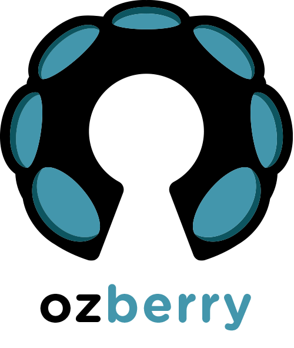
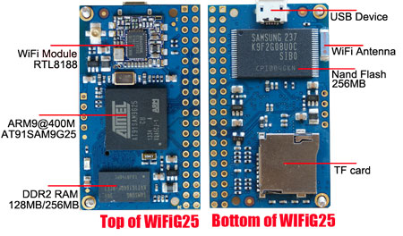

Monthly hackspace
October 2014
Maker culture emphasises learning-through-doing (constructivism) in a social environment.
Maker culture emphasises informal, networked, peer-led, and shared learning motivated by fun and self-fulfilment.
- Wikipedia

Wifig25
http://www.armdevs.com/
News
- Sydney Internet of things - Thursday, October 23, 2014
- OzBerry "Level Up" series - speakers: expressions of interest
- Flea Market
- News from the floor?
OzBerryPi Monthly Maker Space